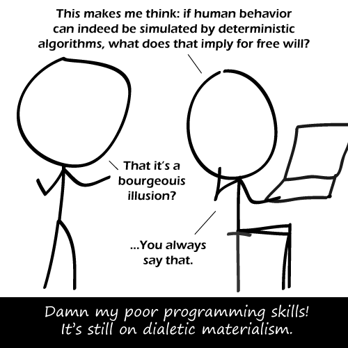

Comic JK 536
When I Feel Like It
⇤
<
?
>
⇥

⇤
<
?
>
⇥
Forum
.
RSS
.
Digg
.
Facebook
.
Reddit
.
Twitter
.
Stumbleupon
Enter your thoughts on number 536 here. Please, no spamming, trolling, or choosing otherwise. Computers are good at anything you can make out of NAND gates, but not much else. >> Luckily, you can (in theory) make -anything- which processes information out of NAND. Even a human brain, if the algorithm and hardware are good enough. >>>Implying neurons act as NAND gates. You can build a SIMULATION of a human brain, but building a proper human brain requires all those messy neurotransmitters and receptors and such. >>>>Exactly. A perfectly accurate simulation of a human brain would show that human behavior can be replicated by deterministic algorithms. I for one hope God has properly debugged his code though. >>>>>Given the amount of insane people and the fact that supposedly sane people have the capacity to act in perfectly ridiculous manners, I'd say the code is in dire need of debugging. Eh, what can you expect from a self-modifying program? >>>>>>science, art, music, literature and webcomics ? ( bagpiping not included ) >>>>>>I suggest we just make it a genetic algorithm and hope this will fix all the bugs. The brain is Non-Deterministic since it depends partly on factors not available for the brain to moniter, like temperature (incidentally, this means that the Apple III is also Non-Deterministic). In theory, theory works great. In practice, it tends not to. Thirst! >>Here is some water. Drink up. You have to be into philosophy AND computing to get the joke. Good luck finding anyone in THAT group... >The author? >>Futurists? Me personally? Half of my interesting friends (uninteresting people are not my friends)? More people get it than you suspect. I for one am an adherent to functionalism. I am also a History student. This comic changed... pretty sure the title-text used to say something about a robot. > That's before the neural network that generated it realised that Lolcats were more popular. >> Not to me they aren't. It doesn't take a computer to determine what your mother will do when she encounters my dick.